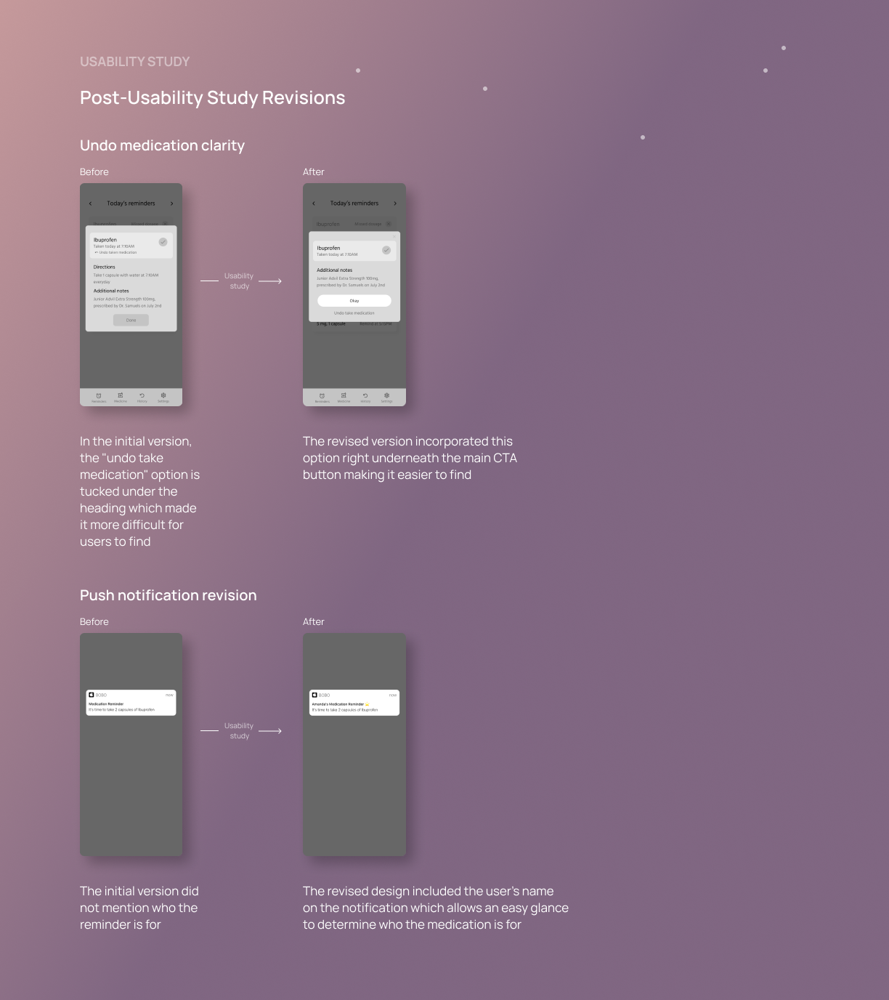

Bobo
Bobo is a medication reminder app for elementary aged children, helping this demographic build independence and gain insight into their own wellness journey
Role UX/UI Designer, UX Researcher
Duration 3 weeks
Tools Adobe XD, Adobe Illustrator, Miro

Problem
125,000 deaths occur in America as a result of medication non-adherence
16% of American children suffer from a chronic condition that requires medication. Some critical conditions such as cancer, epilepsy, and post-transplant therapy have higher medication adherence rate (50%-60%), whereas other conditions such as Attention Deficit Hyperactive Disorder (ADHD) have lower medication adherence rates, where most patience discontinue medication after 4 months.
DESIGN PROCESS
Agile Design Process
For this project, I decided to follow the Agile Design process. The iterative and incremental framework that's highlighted by the agile methodology allows the ability to get more user engagement throughout the design journey, which ultimately helps me to create a refined product to be delivered to the users.
RESEARCH
Primary Research
I sat down with children who suffer from conditions which require medication, along with parents of these children in order to gain a better understanding of their current experience with taking medication and how the current journey can be enhanced.
Secondary Research
In addition to the primary research, I also conducted secondary research to gain some insight into the relationship between American children and technology.
Children on average have a daily screen time of 4-6 hours across their devices.
Seeing that children spend a good deal of their time online, how might we use this to help them gain independence in taking their medications?
Application Preferences
Users were also asked to described some features/experiences that would appreciate seeing in a medication reminder app:
Straightforward Experience
Users prefer to accomplish tasks and activities through a manner that is quick and efficient.
Full Transparency
Users would like an option to look into the reminder's history and see whether medication has been taken or not.
Gamification
Users prefer a unique experience where they are directly engaged and can have fun while accomplishing tasks.
Competitive Audit
I conducted a competitive audit to determine who the key market players are and how their strengths can be incorporated into the project. It was determined that there were 3 main apps users tend to gravitate towards when choosing a pill reminder app. Below is a summary of the competitive audit:
IDEATE
User Flows
There are 2 main use cases for user flows:
1. Adding a new medication / editing an existing medication
2. Receiving a push notification for a reminder
I created 2 user flow diagrams to document the user interaction points within the use cases.

Gamification
Users preferred to have an engaging and interactive experience while on the app.
To serve this preference, I decided to include a virtual pet element in this game.
"Bobo" is a pet that the user can take care of, with every day the user successfully takes all of their medications, they are rewarded with a prize to dress up Bobo with. With every missed medication, Bobo's mood worsens. In order to cheer Bobo back up, the user must take their medications then mark the reminder as complete.
Low-Fidelity Wireframes
Many low-fidelity wireframes were created in the making, however, I chose one final version to stick to and conduct a usability study on. Below is the selected version:
Usability Studies
Usability Study #1
A total of 2 usability studies were conducted for this project, the first usability study assessed the user's ability to add a new medication to the app then set a reminder.
Turning Themes into Insights
Overwhelmed by medication adding process
When adding new medication, there needs to be a process that is simple to follow and has low visual clutter
Difficulties keeping track of medication for families with multiple children
Users require a management system that allows them to keep track of multiple children's medications
Making Revisions
Usability Studies
Usability Study #2
A total of 2 usability studies were conducted for this project, the second usability study assessed the user's ability to mark a reminder as complete after receiving a push notification

Turning Themes into Insights
Confusing undo process
Users require more clarity when looking to undo a completed task
Incomplete push notification
Users need more distinction on push notifications to determine who the medication reminder is for
Making Revisions

DESIGN
Style Guide
High-Fidelity Wireframes
Key Features
Adding Medication
This step by step process breaks down the add medication process into smaller tasks that are more manageable, allowing the user to focus on each individual task in order to complete the overall task.
History Tracker
A history feature that allows the user/guardian to review previous logs and ensure the user is taking their medications on time.
By clicking on a date, all reminders are displayed along with the action the user took for each reminder.

Rewards Pt.1
With every day a user successfully takes all their medications on time, they are awarded with a piece of clothing to dress up Bobo.
Rewards Pt.2
This provides a reward system for users and honours them for their successful completion of tasks.
Rewards Pt.3
In the event that a user misses their medication, Bobo will show an upset emotion and remind the user of the medications they have missed.
After the user takes the medication Bobo's mood will improve accordingly.
Takeaways
This was a really interesting project for me to tackle! This was my first time creating an application geared towards children and in terms of visual designs, I had to do quite a bit of research on what colours/fonts/styles/etc appeal towards children.
Moving forward, I'd like to have an option in the settings that switches themes (farm themed, forest themed, ocean themed, etc). The current theme for this app is space, however different children have different interests and having a selection of themes for this app can very much enhance the user's overall experience.